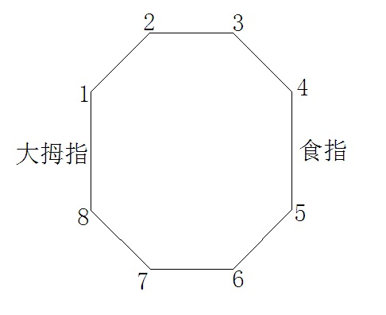
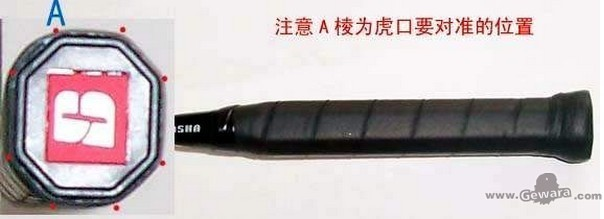
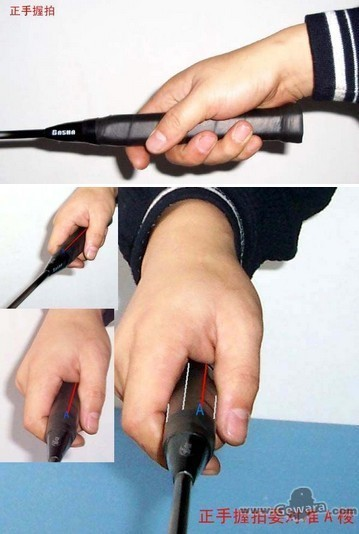

- 正手握拍   
- 打一切在身体右侧的正手正拍击球及头顶后场击球
- 先用左手握住球拍的中框，使拍框与地面垂直（拍面朝左右，而不是朝上下）
- 张开右手，便虎口对准拍柄斜棱上的第二条棱线（拍柄有8个面，我们把与拍面在同一平面的面叫23,67；与拍面垂直的两个最宽面是18,45；），拇指贴在18面，食指贴在45面；中指与食指稍微张开，与无名指、小指并拢握住拍面；
- 拍柄与掌心不要贴紧，应留有空隙；
- 握拍力度要适宜，恰似握住一个鸡蛋，重则恐破损，轻则恐沉落；握拍不要很紧，要尽量放松握拍手指。 发力时才要握紧。
- 握拍柄的位置：球拍柄端靠近手掌的小鱼际（与手腕连接处）；
- 反手握拍
- 在正手握拍的基础上，拇指和食指将球拍柄销向处旋，拇指贴在18面或12面，食指稍向下靠，球拍斜侧向身体左侧，拍面后仰，一般来说，击打身体左侧的来球，大都先转身，背对网，然后用反手握拍去击球；
- 其它握拍
- 处理网前球时，主要靠拇指和食指来控制球拍，其它手指为辅助指。
- 处理中后场球时，主要靠无名指和小指来握拍，其它手指要虚握，为发力留出空间。
- 发球
- 正手和反手都可以发后场平高球（超过对方跳起拦截高度）后场平射球（擦网而过的突袭）网前小球（右肘稍上提），而对于后场高远球则用正手发；
- 发球站位：单打（跟发球线约1米）；
- 发球规则：双球不能离地或移动；球与拍面接触的瞬间，接触点及整个球拍体要低于腰部（肚脐位），拍框的最高点不能超过肘部；
- 发球后球落点的有效区域：单打（发球线、中线、端线、单打边线（双打边线外端）围成的长方形）；双打（发球线、中线、双打后场线（端线前一条）、双打边线（最外端）围成的长方形）；
- 双打以发网前球为主：双打发球处比单打短0.75m,发高远球易被对方扣杀；
- 反手发后场平高球
- 反手握拍，右手肘稍向上提起；
- 左手放球的同时，持拍手前臂内旋，带动手腕展腕，内后向前作回环半弧开挥动，击球时屈指收腕发力；
- 击后注意将握拍姿势迅速调整为正手握拍；
- 单打接发球的准备姿势
- 左脚在前，右脚在后，侧身对网，重心放在前脚上，膝关节微曲，后脚跟稍提起，收腹含胸，注视对方发球的动作；
- 站位位置：离发球线１.５m处；离中线：１.右发球区的中线位置；２.而左发球区要站到中间（防反手）；
- 接发球
- 接发后场球：对方发高远球或平高球时，可以用平高球、吊球、杀球还击；
- 接发网前球：可以用平高球、高远球回放网前球、平推球还击；
- 正手击高远球
- 判断来球方向和落脚点，侧身后退使球在自己右肩稍前方位置，左肩对网，左脚在前，重心在右脚上，左臂屈肘并自然高举，右手持拍，手臂自然弯曲，将球拍举在右肩上方，两眼注视来球；
- 击球时，大臂后引，随之关节上提使之明显高于肩部，将球拍后引至头后，自然伸腕（拳心朝上），然后在后脚蹬地、转体和腰腹的协调用力下，以肩为轴，大臂带动小臂快速向前上方甩动手腕，在手臂伸直的最记点击球；
- 击球后，持拍手臂顺惯性向前上方挥动并收拍至体前，与此同时，左脚后撤，右脚身前迈出，身体重心由后脚移至前脚；
- 注意：以肩为轴挥臂，而不是以肘为轴，击球时用挥臂甩腕动作，靠爆发力把球击出，而不是推出，充分利用蹬地和收腹的力量；
- 反手击高远球
- 判断对方来球的方向和落点，迅速将身体转向左后方，步伐到位后，右脚前交叉跨到左侧底线，背对网，身体重心在右脚上，使球在身体的右肩上方；
- 击球时由正手握拍迅速转换为反手握拍，并持拍于胸前，拍面朝上；
- 击球：以大臂带动小臂，通过手腕的闪动，自上而下的甩臂将球击出；
- 在最后用力时，要注意拇指的侧压力与甩臂的配合，同时还要运用两脚的蹬地、转体等来协调全身用力；
- 平高球
- 与高远球动作要领基本相同，不同之处是要求发力击球的时间更短，爆发力更强；另外，击球的瞬间应运用前臂带动腹腔充分闪动，同时屈指发力，将球击出；
- 平射球
- 在击球瞬间拍面与地面垂直，并击中球托的中下部，使球的飞行弧度比平高球更平，速度更快；
- 吊球
- 概念：是自后场打到对方前场向下坠落的球，吊球技术有正手、反手、头顶三种；按球的飞行弧线和击球动作的不同可分为劈吊、拦截吊、轻吊；
- 劈吊：前面部分动作与打高球、杀球动作类似，击球时用力较轻、带有劈切动作；落点一般离网较远；
- 拦截吊：把对方击来的平高球拦截回去，击球时用拍面正对来球，轻轻拦切或点击，使球以较平的弧线、以较慢的速度越网下坠；
- 轻吊：击球时正对来球，在触球的刹那突然减速或轻切来球，使球刚一过网即下坠；
- 正手吊球：利用手指、手腕、前臂旋内的动作，挥拍轻击球托的后部或侧后部；吊对角线时，则用手指、手腕的力量，朝左前下方挥拍击来球右侧部的羽毛或球托；
- 反手吊球：前其动作同反手高球；吊直线球时，用球拍反而切削球托的后中部，向对方的右半场网前发力；吊斜线球时，用球拍反而切削球托的左侧，朝对方左半场网前发力；
- 杀球
- 概念：有正手杀直线、正手杀对角线、正手腾空突击杀直线、反手杀直线、头顶杀直线、头顶杀对角线；
- 正手杀球的动作要领
- 准备杀球之前先侧身，左脚在前，两脚的脚尖着地，用快速的后退步法后退，使击球点在右肩前上方，因为击球点靠后的话就只能打高球了；
- 杀球前身体后仰，基本成弓形，以用上全身的力量；
- 杀球前握拍一定要放松，手心和拍柄之间一定要有空隙，如果握拍一直很紧，手腕的力量就使不出来，要在杀球瞬间紧握拍子奋力杀球；
- 杀球的瞬间靠的是手腕和手指（主要是食指）的爆发力，就像抽鞭子一样；与网球不同，不能靠甩大臂来发力，否则球过后没有速度；
- 起跳大概在球开始下落的时候，双腿要保持微曲的姿势，靠脚尖蹬的力量起跳杀球，杀球后立即转身；
- 反手杀球：最后发力时，紧握拍子快速闪腕（处旋或后伸），击球瞬间球拍与杀球方向的水平夹角小于90度
- 挥拍的速度很重要，用力大并不等于速度很快；
- 合理、协调地将最初的蹬地、转体、收腹、挥臂到手腕手指的力量集中地运用到击球点上，动作不但看上去协调舒展，而且击球的速度也很快；
- 网前击球
- 放网前球：当对方放网前球，用球拍轻轻一托，使球向上弹起，过网而坠；注意用手腕进行控制，有正手也有反手；
- 搓球：在网前用拍面切击球托，使球旋转翻滚越过网顶；注意用手指进行控制；
- 挑球：把对方击来的网前球，回到对方的后场去，反手要注意充分运用拇指的项力；
- 推球：在网前较高的击球点上用推击的方法住对方底线献出弧度较平、速度较快的球；
- 勾球：在网前用屈腕（或伸腕）的动作调整球拍角度，轻巧地将球回击到对方斜对角的网前区域内；
- 扑球：对方击来的网前球网过网，高度仍在网沿上面时，即迅即上网挥击下压过去（瞬间发力）；
- 抹球：在网前，对方击来的球刚好贴近网络时，即迅速用手腕将球摩擦过去；
- 其它击球
- 抽球：把身体左、右侧，肩以下腰以上的来球平扫过去；
- 快挡球：一种中场击球技术，把位于体前的来球弹击过去，使球过后落于网前区，是双持的防守技术；
- 半蹲快打击球：（双打）；
- 接杀球：在用放网和勾对角球接杀时，要松握球拍，用力要小，主要借对方杀球的力量；适当时，球拍触球时还可作适当的后撤；
- 假动作
- 正手假动作：较大距离引拍，让对方以为要打高远球，所以注意力放在后场，重心就靠后了，在球拍将要击球时瞬间收力，拍面轻击球托，放出一个正手短球；或者引拍幅度较小，而击球时，利用手腕快速闪动带动球拍击出正手平快球或平高球；
- 反手发球的假动作
- 虚扑实放网前球
- 虚放实挑后场
- 身体做掩护，虚晃球拍声东击西；
- 虚推实拔；
- 虚搓实勾：
- 虚挑后场实放网前
- 虚挡实搓
- 虚反手实正手勾网前
- 虚杀实吊
- 虚杀实抹；
- 虚杀实平抽
- 虚杀实平高球再压对方反手位后场
- 战术
- 发球抢攻
- 接发球抢攻
- 重复平高球进攻战术
- 拉开两边平高球
- 重复吊球
- 慢吊结合快吊（劈吊）
- 重复杀球
- 长杀结合短杀
- 重杀结合轻杀
- 重复搓球
- 重复推球
- 两边勾球
- 规则
- 发球员每得一分后，原发球员则变换发球区再发球，只有接发球员才能接发球；
- 单打发球：一局当中，发球员的分数为0或双数时，双方运动员均应在各自的右发球区发球区发球或接发球；
- 双打发球：
- 发球员在右发球区发球；
- 接发球员的同伴从左发球区发球；
- 最先发球的同伴；
- 最先的接发球员
- 接发球违例：接发球时（发球者的球从拍面弹出瞬间前）接发球员的双脚或任何一只脚不得移动；
- 不能过网击球或触网；